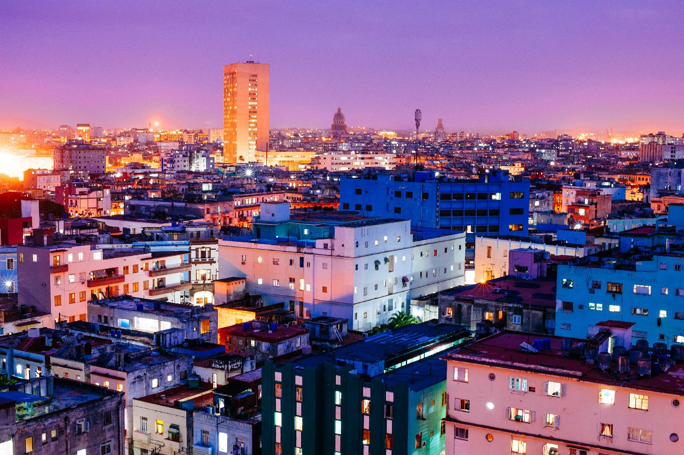

Welcome to cuba
Timeworn but magnificent, dilapidated but dignified, fun yet maddeningly frustrating – Cuba is a country of indefinable magic.
Start exploring Cuba with Lonely Planet’s video guide to getting around, when to go and the top things to do while you're there.